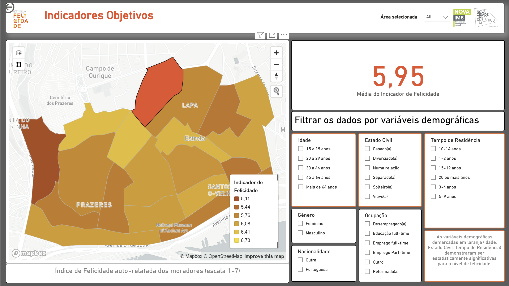

Estrela pela Felicidade
A multidimensional happiness and quality-of-life indicator combining objective data with a survey of 400 residents.


Estrela pela Felicidade assesses happiness and quality of life in Estrela Parish through a multidimensional indicator that combines objective and subjective data. The goal was to support local decision-making by identifying territorial inequalities, the key drivers of happiness, and priority areas for public action. The project received an honourable mention at the 'Prémios Autarquia do Ano 2025' in the 'Public wellbeing promotion' category, and was covered in the press, including Time Out Lisboa.
The work required developing a specific methodology to measure happiness at the parish level, integrating objective indicators from open and acquired data sources with subjective indicators collected through a survey. The survey reached 400 residents and included questions on self-perceived happiness as well as perceptions of the different dimensions and factors shaping everyday life in the parish.
It produced three main outputs: an analytical dashboard visualising objective and subjective scores for each dimension and factor across the parish's neighbourhoods; a predictive tool estimating how changes in selected objective factors could affect overall happiness; and a final report presenting the methodology, key findings, territorial patterns, and specific areas for action, including how variables affected happiness across demographic groups.
- Urban Analytics
- Wellbeing
- Data Visualization